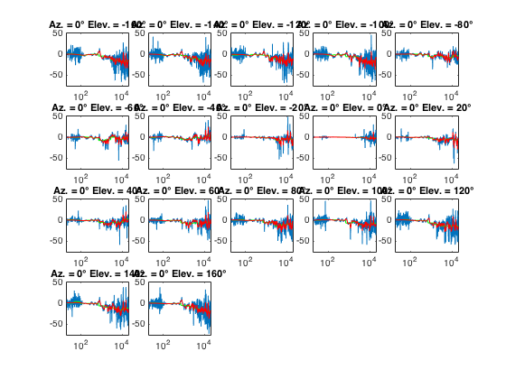

Contents
Description of Code
User Inputs
sound = 'GLD';
graphTitleSound = 'GLD';
repeat = 1;
Definitions
fs = 96000;
zPlaneOctaveBandResponse = zeros(37, 10);
yPlaneOctaveBandResponse = zeros(17, 10);
xPlaneOctaveBandResponse = zeros(17, 10);
Analyze the z plane
fprintf('\nAnalyzing the Z-Plane\n');
figure;
x = 1;
l = 5;
m = 8;
for phi = 0:10:360
azimuth = phi;
elevation = 0;
normalized_filename = sprintf('%s_%d_%d_%d_N.wav', sound, repeat,...
azimuth,elevation);
test_filename = sprintf('%s_%d_%d_%d_T.wav', sound, repeat,...
azimuth,elevation);
disp(['Comparing ' normalized_filename ' with ' test_filename '']);
zPlaneOctaveBandResponse(x, :) = PlotComparasonSpectrum_2(...
normalized_filename,...
test_filename,...
azimuth,...
elevation,...
fs, x, l, m...
);
x = x + 1;
end
hold off;
Analyzing the Z-Plane
Comparing GLD_1_0_0_N.wav with GLD_1_0_0_T.wav
Comparing GLD_1_10_0_N.wav with GLD_1_10_0_T.wav
Comparing GLD_1_20_0_N.wav with GLD_1_20_0_T.wav
Comparing GLD_1_30_0_N.wav with GLD_1_30_0_T.wav
Comparing GLD_1_40_0_N.wav with GLD_1_40_0_T.wav
Comparing GLD_1_50_0_N.wav with GLD_1_50_0_T.wav
Comparing GLD_1_60_0_N.wav with GLD_1_60_0_T.wav
Comparing GLD_1_70_0_N.wav with GLD_1_70_0_T.wav
Comparing GLD_1_80_0_N.wav with GLD_1_80_0_T.wav
Comparing GLD_1_90_0_N.wav with GLD_1_90_0_T.wav
Comparing GLD_1_100_0_N.wav with GLD_1_100_0_T.wav
Comparing GLD_1_110_0_N.wav with GLD_1_110_0_T.wav
Comparing GLD_1_120_0_N.wav with GLD_1_120_0_T.wav
Comparing GLD_1_130_0_N.wav with GLD_1_130_0_T.wav
Comparing GLD_1_140_0_N.wav with GLD_1_140_0_T.wav
Comparing GLD_1_150_0_N.wav with GLD_1_150_0_T.wav
Comparing GLD_1_160_0_N.wav with GLD_1_160_0_T.wav
Comparing GLD_1_170_0_N.wav with GLD_1_170_0_T.wav
Comparing GLD_1_180_0_N.wav with GLD_1_180_0_T.wav
Comparing GLD_1_190_0_N.wav with GLD_1_190_0_T.wav
Comparing GLD_1_200_0_N.wav with GLD_1_200_0_T.wav
Comparing GLD_1_210_0_N.wav with GLD_1_210_0_T.wav
Comparing GLD_1_220_0_N.wav with GLD_1_220_0_T.wav
Comparing GLD_1_230_0_N.wav with GLD_1_230_0_T.wav
Comparing GLD_1_240_0_N.wav with GLD_1_240_0_T.wav
Comparing GLD_1_250_0_N.wav with GLD_1_250_0_T.wav
Comparing GLD_1_260_0_N.wav with GLD_1_260_0_T.wav
Comparing GLD_1_270_0_N.wav with GLD_1_270_0_T.wav
Comparing GLD_1_280_0_N.wav with GLD_1_280_0_T.wav
Comparing GLD_1_290_0_N.wav with GLD_1_290_0_T.wav
Comparing GLD_1_300_0_N.wav with GLD_1_300_0_T.wav
Comparing GLD_1_310_0_N.wav with GLD_1_310_0_T.wav
Comparing GLD_1_320_0_N.wav with GLD_1_320_0_T.wav
Comparing GLD_1_330_0_N.wav with GLD_1_330_0_T.wav
Comparing GLD_1_340_0_N.wav with GLD_1_340_0_T.wav
Comparing GLD_1_350_0_N.wav with GLD_1_350_0_T.wav
Comparing GLD_1_360_0_N.wav with GLD_1_360_0_T.wav

Analyze the y plane
fprintf('\nAnalyzing the Y-Plane\n');
figure;
x = 1;
l = 4;
m = 5;
for theta = -160:20:160
azimuth = 0;
elevation = theta;
normalized_filename = sprintf('%s_%d_%d_%d_N.wav', sound, repeat,...
azimuth,elevation);
test_filename = sprintf('%s_%d_%d_%d_T.wav', sound, repeat,...
azimuth,elevation);
disp(['Comparing ' normalized_filename ' with ' test_filename '']);
yPlaneOctaveBandResponse(x, :) = PlotComparasonSpectrum_2(...
normalized_filename,...
test_filename,...
azimuth,...
elevation,...
fs, x, l, m...
);
x = x + 1;
end
hold off;
Analyzing the Y-Plane
Comparing GLD_1_0_-160_N.wav with GLD_1_0_-160_T.wav
Comparing GLD_1_0_-140_N.wav with GLD_1_0_-140_T.wav
Comparing GLD_1_0_-120_N.wav with GLD_1_0_-120_T.wav
Comparing GLD_1_0_-100_N.wav with GLD_1_0_-100_T.wav
Comparing GLD_1_0_-80_N.wav with GLD_1_0_-80_T.wav
Comparing GLD_1_0_-60_N.wav with GLD_1_0_-60_T.wav
Comparing GLD_1_0_-40_N.wav with GLD_1_0_-40_T.wav
Comparing GLD_1_0_-20_N.wav with GLD_1_0_-20_T.wav
Comparing GLD_1_0_0_N.wav with GLD_1_0_0_T.wav
Comparing GLD_1_0_20_N.wav with GLD_1_0_20_T.wav
Comparing GLD_1_0_40_N.wav with GLD_1_0_40_T.wav
Comparing GLD_1_0_60_N.wav with GLD_1_0_60_T.wav
Comparing GLD_1_0_80_N.wav with GLD_1_0_80_T.wav
Comparing GLD_1_0_100_N.wav with GLD_1_0_100_T.wav
Comparing GLD_1_0_120_N.wav with GLD_1_0_120_T.wav
Comparing GLD_1_0_140_N.wav with GLD_1_0_140_T.wav
Comparing GLD_1_0_160_N.wav with GLD_1_0_160_T.wav

Analyze the x plane
fprintf('\nAnalyzing the X-Plane\n');
figure;
x = 1;
l = 4;
m = 5;
for theta = -160:20:160
azimuth = 90;
elevation = theta;
normalized_filename = sprintf('%s_%d_%d_%d_N.wav', sound, repeat,...
azimuth,elevation);
test_filename = sprintf('%s_%d_%d_%d_T.wav', sound, repeat,...
azimuth,elevation);
disp(['Comparing ' normalized_filename ' with ' test_filename '']);
xPlaneOctaveBandResponse(x, :) = PlotComparasonSpectrum_2(...
normalized_filename,...
test_filename,...
azimuth,...
elevation,...
fs, x, l, m...
);
x = x + 1;
end
hold off;
Analyzing the X-Plane
Comparing GLD_1_90_-160_N.wav with GLD_1_90_-160_T.wav
Comparing GLD_1_90_-140_N.wav with GLD_1_90_-140_T.wav
Comparing GLD_1_90_-120_N.wav with GLD_1_90_-120_T.wav
Comparing GLD_1_90_-100_N.wav with GLD_1_90_-100_T.wav
Comparing GLD_1_90_-80_N.wav with GLD_1_90_-80_T.wav
Comparing GLD_1_90_-60_N.wav with GLD_1_90_-60_T.wav
Comparing GLD_1_90_-40_N.wav with GLD_1_90_-40_T.wav
Comparing GLD_1_90_-20_N.wav with GLD_1_90_-20_T.wav
Comparing GLD_1_90_0_N.wav with GLD_1_90_0_T.wav
Comparing GLD_1_90_20_N.wav with GLD_1_90_20_T.wav
Comparing GLD_1_90_40_N.wav with GLD_1_90_40_T.wav
Comparing GLD_1_90_60_N.wav with GLD_1_90_60_T.wav
Comparing GLD_1_90_80_N.wav with GLD_1_90_80_T.wav
Comparing GLD_1_90_100_N.wav with GLD_1_90_100_T.wav
Comparing GLD_1_90_120_N.wav with GLD_1_90_120_T.wav
Comparing GLD_1_90_140_N.wav with GLD_1_90_140_T.wav
Comparing GLD_1_90_160_N.wav with GLD_1_90_160_T.wav
Produce Data Tables (setup)
fprintf('\nProducing Data Tables');
octaveBands = {'31.5Hz' ,'63Hz' ,'125Hz' ,'250Hz' ,'500Hz' ,...
'1,000Hz','2,000Hz','4,000Hz','8,000Hz','16,000Hz'};
Producing Data Tables
Produce Data Tables Z - Plane
figure;
zPlaneDegString = cell(37, 1);
stepper = 1;
for deg = 0:10:360
string = cellstr(sprintf('%d%c', deg, char(176)));
zPlaneDegString(stepper) = string;
stepper = stepper + 1;
end
uicontrol('style', 'text',...
'string', 'Z-Plane Responce in dB relative to 0 degrees',...
'Position', [10 690 820 20]);
uitable('data', zPlaneOctaveBandResponse,...
'RowName', zPlaneDegString, ...
'ColumnName', octaveBands,...
'ColumnWidth', {75},...
'Position',[10 10 820 670]);
Produce Data Tables Y - Plane
figure;
yPlaneDegString = cell(17, 1);
stepper = 1;
for deg = -160:20:160
string = cellstr(sprintf('%d%c', deg, char(176)));
yPlaneDegString(stepper) = string;
stepper = stepper + 1;
end
uicontrol('style', 'text',...
'string', 'Y-Plane Responce in dB relative to 0 degrees',...
'Position', [10 360 820 20]);
uitable('data', yPlaneOctaveBandResponse,...
'RowName', yPlaneDegString, ...
'ColumnName', octaveBands,...
'ColumnWidth', {75},...
'Position',[10 10 830 340]);
Produce Data Tables X - Plane
figure;
xPlaneDegString = cell(17, 1);
stepper = 1;
for deg = -160:20:160
string = cellstr(sprintf('%d%c', deg, char(176)));
xPlaneDegString(stepper) = string;
stepper = stepper + 1;
end
uicontrol('style', 'text',...
'string', 'X-Plane Responce in dB relative to 0 degrees',...
'Position', [10 360 820 20]);
uitable('data', xPlaneOctaveBandResponse,...
'RowName', xPlaneDegString, ...
'ColumnName', octaveBands,...
'ColumnWidth', {75},...
'Position',[10 10 830 340]);
Manipulate Data for Polar Plots
fprintf('\nManipulating Data for Polar Plots');
zangle = 0 : 2*pi/36 : 2*pi;
zoffset = -40;
zPlaneOctaveBandResponse = zPlaneOctaveBandResponse - zoffset;
yangle = 0 : 2*pi/18 : 2*pi;
temp = yPlaneOctaveBandResponse(1:8, :);
yPlaneOctaveBandResponse(1:9, :) = yPlaneOctaveBandResponse(9:17, :);
yPlaneOctaveBandResponse(10, :) = zPlaneOctaveBandResponse(19, :)...
+ zoffset;
yPlaneOctaveBandResponse(11:18, :) = temp(1:8, :);
yPlaneOctaveBandResponse(19, :) = zPlaneOctaveBandResponse(37, :)...
+ zoffset;
yoffset = -40;
yPlaneOctaveBandResponse = yPlaneOctaveBandResponse - yoffset;
xangle = 0 : 2*pi/18 : 2*pi;
temp = xPlaneOctaveBandResponse(1:8, :);
xPlaneOctaveBandResponse(1:9, :) = xPlaneOctaveBandResponse(9:17, :);
xPlaneOctaveBandResponse(10, :) = zPlaneOctaveBandResponse(28, :)...
+ zoffset;
xPlaneOctaveBandResponse(11:18, :) = temp(1:8, :);
xPlaneOctaveBandResponse(19, :) = zPlaneOctaveBandResponse(10, :)...
+ zoffset;
xoffset = -40;
xPlaneOctaveBandResponse = xPlaneOctaveBandResponse - xoffset;
Manipulating Data for Polar Plots
Plot Polar Plots (setup)
fprintf('\nProducing Polar Plots')
Producing Polar Plots
Plot Z-Plane Polar graph
figure;
p = polar(zangle, (ones(1, 37) * -zoffset) + 1);
set(p, 'Visible', 'off');
hold on;
p0 = polar(zangle, (ones(1, 37) * -zoffset), 'k');
p1 = polar(zangle, zPlaneOctaveBandResponse(:, 1).', 'b');
p2 = polar(zangle, zPlaneOctaveBandResponse(:, 2).', 'r');
p3 = polar(zangle, zPlaneOctaveBandResponse(:, 3).', 'g');
hold off;
graphTitle = ...
sprintf(...
'Source: %s, Z-Plane: Azimuth = plotted, Elevation = 0%c',...
graphTitleSound, char(176)...
);
title(graphTitle);
set(findall(gca, 'String', ' 50'),'String', '+10 dB');
set(findall(gca, 'String', ' 40'),'String', ' 0 dB');
set(findall(gca, 'String', ' 30'),'String', '-10 dB');
set(findall(gca, 'String', ' 20'),'String', '-20 dB');
set(findall(gca, 'String', ' 10'),'String', '-30 dB');
legend([p0, p1, p2, p3], '0dB Marker', '31.5Hz','63Hz','125Hz',...
'location', 'northwestoutside');
figure;
p = polar(zangle, (ones(1, 37) * -zoffset) + 1);
set(p, 'Visible', 'off');
hold on;
p0 = polar(zangle, (ones(1, 37) * -zoffset), 'k');
p4 = polar(zangle, zPlaneOctaveBandResponse(:, 4).', 'b');
p5 = polar(zangle, zPlaneOctaveBandResponse(:, 5).', 'r');
p6 = polar(zangle, zPlaneOctaveBandResponse(:, 6).', 'g');
p7 = polar(zangle, zPlaneOctaveBandResponse(:, 7).', '--b');
p8 = polar(zangle, zPlaneOctaveBandResponse(:, 8).', '--r');
p9 = polar(zangle, zPlaneOctaveBandResponse(:, 9).', '--g');
p10 = polar(zangle, zPlaneOctaveBandResponse(:, 10).', ':b');
hold off;
graphTitle = ...
sprintf(...
'Source: %s, Z-Plane: Azimuth = plotted, Elevation = 0%c',...
graphTitleSound, char(176)...
);
title(graphTitle);
set(findall(gca, 'String', ' 50'),'String', '+10 dB');
set(findall(gca, 'String', ' 40'),'String', ' 0 dB');
set(findall(gca, 'String', ' 30'),'String', '-10 dB');
set(findall(gca, 'String', ' 20'),'String', '-20 dB');
set(findall(gca, 'String', ' 10'),'String', '-30 dB');
legend([p0, p4, p5, p6, p7, p8, p9, p10],...
'0dB Marker', '250Hz','500Hz' ,'1000Hz' ,...
'2000Hz' ,'4000Hz','8000Hz','16000Hz',...
'location', 'northwestoutside');

Plot Y-Plane Polar graph
figure;
p = polar(yangle, (ones(1, 19) * -yoffset) + 1);
set(p, 'Visible', 'off');
hold on;
p0 = polar(yangle, (ones(1, 19) * -yoffset), 'k');
p1 = polar(yangle, yPlaneOctaveBandResponse(:, 1).', 'b');
p2 = polar(yangle, yPlaneOctaveBandResponse(:, 2).', 'r');
p3 = polar(yangle, yPlaneOctaveBandResponse(:, 3).', 'g');
hold off;
graphTitle = ...
sprintf(...
'Source: %s, Y-Plane: Azimuth = 0%c, Elevation = plotted',...
graphTitleSound, char(176)...
);
title(graphTitle);
set(findall(gca, 'String', ' 50'),'String', '+10 dB');
set(findall(gca, 'String', ' 40'),'String', ' 0 dB');
set(findall(gca, 'String', ' 30'),'String', '-10 dB');
set(findall(gca, 'String', ' 20'),'String', '-20 dB');
set(findall(gca, 'String', ' 10'),'String', '-30 dB');
legend([p0, p1, p2, p3], '0dB Marker', '31.5Hz','63Hz','125Hz',...
'location', 'northwestoutside');
figure;
p = polar(yangle, (ones(1, 19) * -yoffset) + 1);
set(p, 'Visible', 'off');
hold on;
p0 = polar(yangle, (ones(1, 19) * -yoffset), 'k');
p4 = polar(yangle, yPlaneOctaveBandResponse(:, 4).', 'b');
p5 = polar(yangle, yPlaneOctaveBandResponse(:, 5).', 'r');
p6 = polar(yangle, yPlaneOctaveBandResponse(:, 6).', 'g');
p7 = polar(yangle, yPlaneOctaveBandResponse(:, 7).', '--b');
p8 = polar(yangle, yPlaneOctaveBandResponse(:, 8).', '--r');
p9 = polar(yangle, yPlaneOctaveBandResponse(:, 9).', '--g');
p10 = polar(yangle, yPlaneOctaveBandResponse(:, 10).', ':b');
hold off;
graphTitle = ...
sprintf(...
'Source: %s, Y-Plane: Azimuth = 0%c, Elevation = plotted',...
graphTitleSound, char(176)...
);
title(graphTitle);
set(findall(gca, 'String', ' 50'),'String', '+10 dB');
set(findall(gca, 'String', ' 40'),'String', ' 0 dB');
set(findall(gca, 'String', ' 30'),'String', '-10 dB');
set(findall(gca, 'String', ' 20'),'String', '-20 dB');
set(findall(gca, 'String', ' 10'),'String', '-30 dB');
legend([p0, p4, p5, p6, p7, p8, p9, p10],...
'0dB Marker', '250Hz','500Hz' ,'1000Hz' ,...
'2000Hz' ,'4000Hz','8000Hz','16000Hz',...
'location', 'northwestoutside');
Plot X-Plane Polar graph
figure;
p = polar(xangle, (ones(1, 19) * -xoffset) + 1);
set(p, 'Visible', 'off');
hold on;
p0 = polar(xangle, (ones(1, 19) * -xoffset), 'k');
p1 = polar(xangle, xPlaneOctaveBandResponse(:, 1).', 'b');
p2 = polar(xangle, xPlaneOctaveBandResponse(:, 2).', 'r');
p3 = polar(xangle, xPlaneOctaveBandResponse(:, 3).', 'g');
hold off;
graphTitle = ...
sprintf(...
'Source: %s, X-Plane: Azimuth = 90%c, Elevation = plotted',...
graphTitleSound, char(176)...
);
title(graphTitle);
set(findall(gca, 'String', ' 50'),'String', '+10 dB');
set(findall(gca, 'String', ' 40'),'String', ' 0 dB');
set(findall(gca, 'String', ' 30'),'String', '-10 dB');
set(findall(gca, 'String', ' 20'),'String', '-20 dB');
set(findall(gca, 'String', ' 10'),'String', '-30 dB');
legend([p0, p1, p2, p3], '0dB Marker', '31.5Hz','63Hz','125Hz',...
'location', 'northwestoutside');
figure;
p = polar(xangle, (ones(1, 19) * -xoffset) + 1);
set(p, 'Visible', 'off');
hold on;
p0 = polar(xangle, (ones(1, 19) * -xoffset), 'k');
p4 = polar(xangle, xPlaneOctaveBandResponse(:, 4).', 'b');
p5 = polar(xangle, xPlaneOctaveBandResponse(:, 5).', 'r');
p6 = polar(xangle, xPlaneOctaveBandResponse(:, 6).', 'g');
p7 = polar(xangle, xPlaneOctaveBandResponse(:, 7).', '--b');
p8 = polar(xangle, xPlaneOctaveBandResponse(:, 8).', '--r');
p9 = polar(xangle, xPlaneOctaveBandResponse(:, 9).', '--g');
p10 = polar(xangle, xPlaneOctaveBandResponse(:, 10).', ':b');
hold off;
graphTitle = ...
sprintf(...
'Source: %s, X-Plane: Azimuth = 90%c, Elevation = plotted',...
graphTitleSound, char(176)...
);
title(graphTitle);
set(findall(gca, 'String', ' 50'),'String', '+10 dB');
set(findall(gca, 'String', ' 40'),'String', ' 0 dB');
set(findall(gca, 'String', ' 30'),'String', '-10 dB');
set(findall(gca, 'String', ' 20'),'String', '-20 dB');
set(findall(gca, 'String', ' 10'),'String', '-30 dB');
legend([p0, p4, p5, p6, p7, p8, p9, p10],...
'0dB Marker', '250Hz','500Hz' ,'1000Hz' ,...
'2000Hz' ,'4000Hz','8000Hz','16000Hz',...
'location', 'northwestoutside');
End of Code
fprintf('\nAnalysis Complete\n');
Analysis Complete